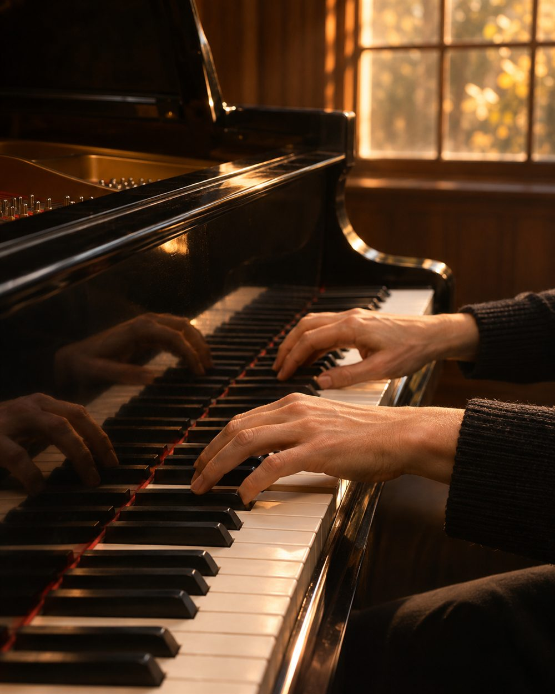

Piano
Développez votre technique, apprenez à lire la musique et explorez les styles qui vous plaisent.
Vernon, C.-B. · En ligne
Cours de piano et de chant avec Angela Sommer à Vernon, en Colombie-Britannique, et en ligne. Pour enfants, ados et adultes de tous niveaux.

Cours
Parlez à Angela de vos goûts et de ce que vous souhaitez travailler. Elle adapte les cours à vos objectifs, de votre premier morceau à la préparation d’un spectacle.
Développez votre technique, apprenez à lire la musique et explorez les styles qui vous plaisent.
Développez une technique vocale saine et découvrez un répertoire qui convient à votre voix.
Apprenez à comprendre le rythme, la notation et l’harmonie, puis appliquez ces notions aux morceaux que vous jouez.
Préparez un récital, une audition ou une prise de parole et gagnez en aisance devant un public.
Travaillez avec une pianiste lors de vos répétitions et prestations, que vous chantiez ou jouiez d’un instrument.
Votre professeure
Angela est membre de la BC Registered Music Teachers’ Association et enseigne depuis plus de 25 ans. Elle s’appuie sur différents styles et méthodes pédagogiques pour aider chaque élève à développer sa technique, sa musicalité et sa confiance.
Elle enseigne à son studio à Vernon et travaille avec des élèves de l’Okanagan et du Shuswap. Ses cours en ligne sont accessibles de partout.
En savoir plus sur AngelaPour commencer
Les débutants sont les bienvenus. Angela accompagne aussi les personnes qui reprennent la musique et les musiciens d’expérience qui souhaitent aller plus loin.
Oui. Demandez à Angela quelle formule convient à vos objectifs. Les cours en personne au studio de Vernon sont sur rendez-vous.
Angela enseigne en anglais et en allemand.
Pour vous inscrire sur la liste d’attente, utilisez la page d’inscription des nouveaux élèves. Pour les tarifs ou toute question sur les disponibilités, écrivez à Angela.
Le portail élève donne accès à votre horaire et aux ressources de cours.
Coordonnées
Parlez à Angela de vos intérêts et de votre expérience, ou inscrivez-vous sur la liste d’attente des nouveaux élèves.